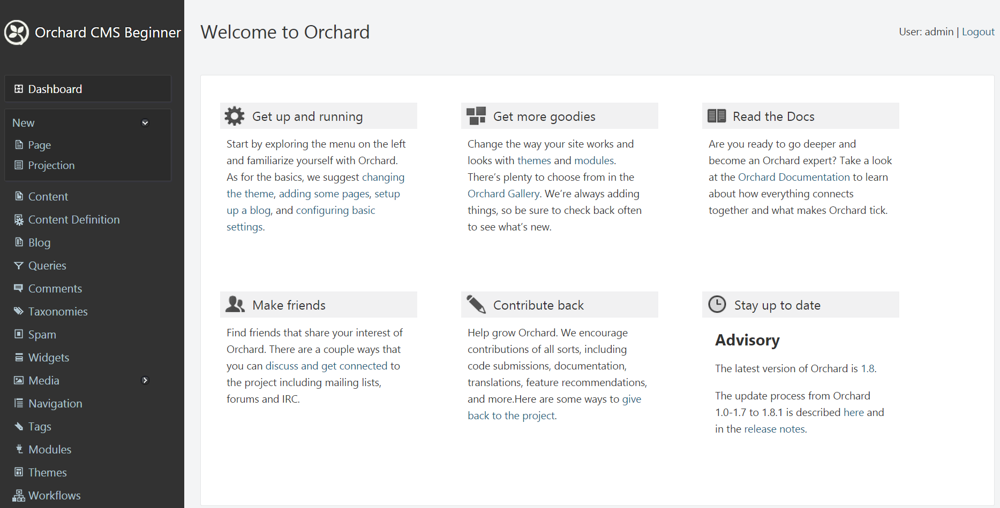
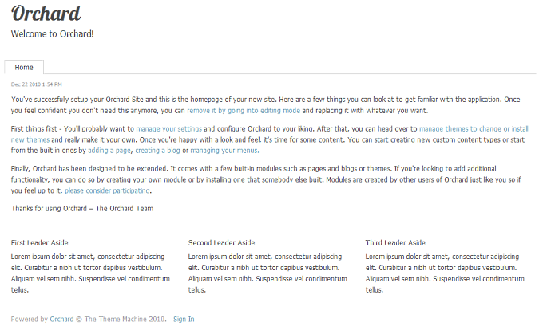
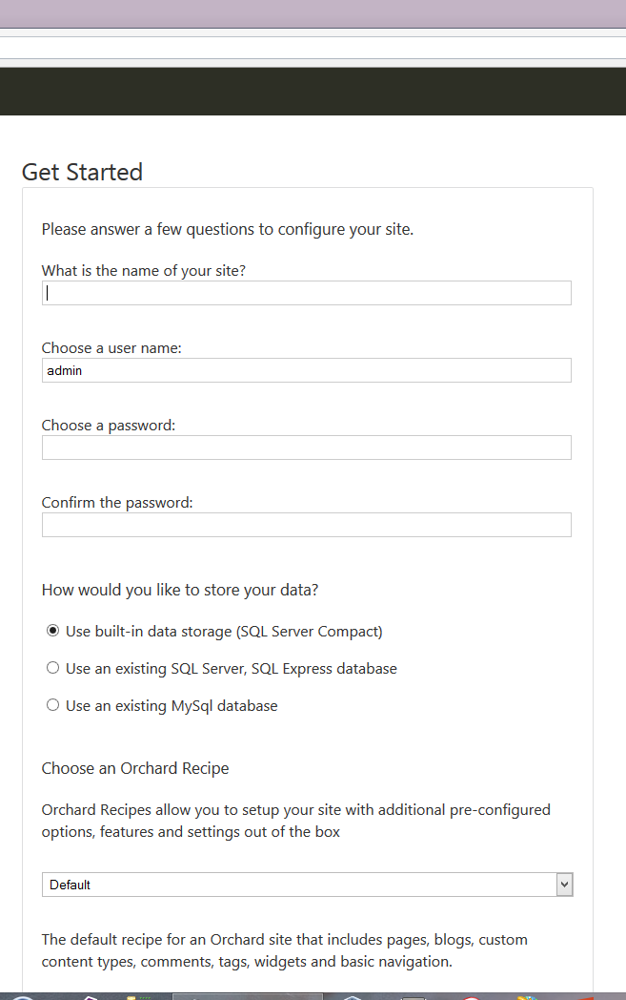
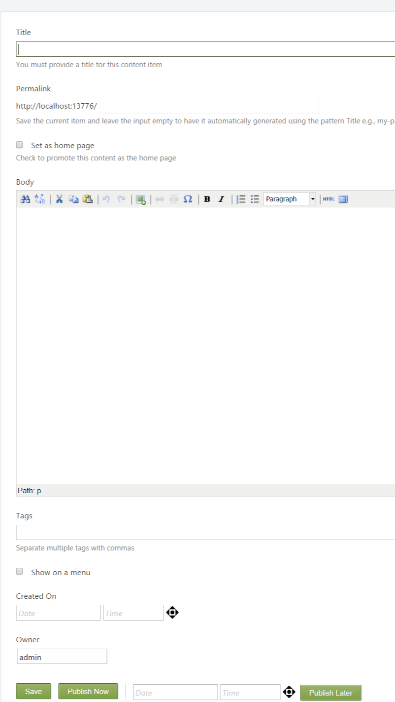
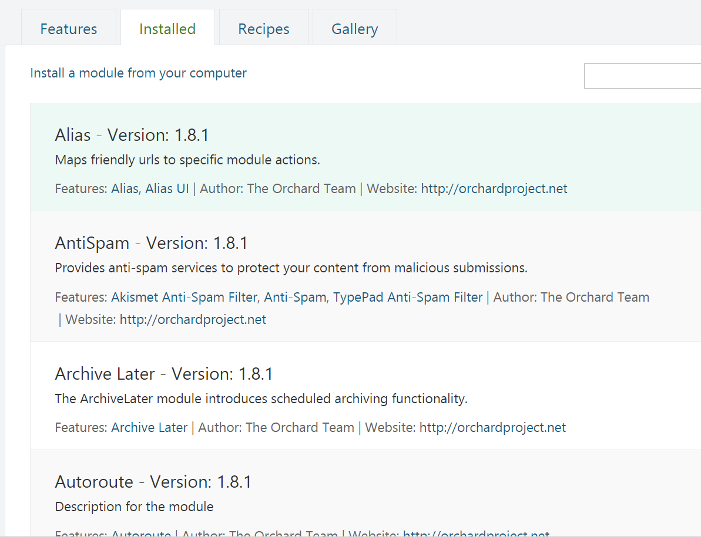
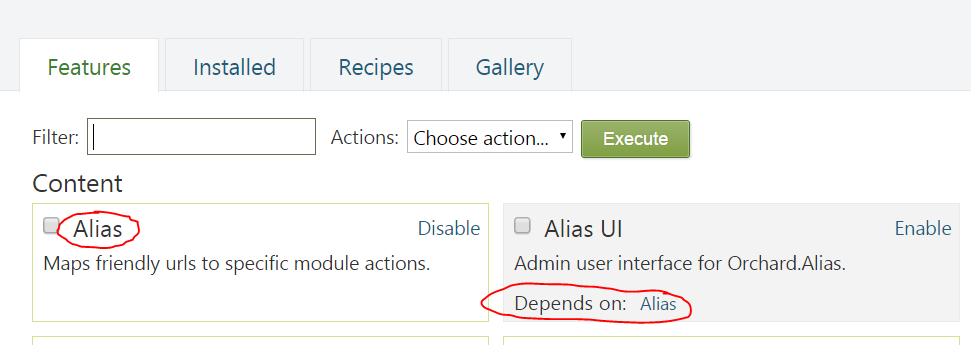
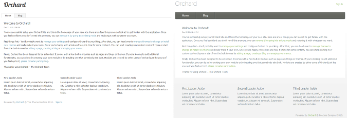
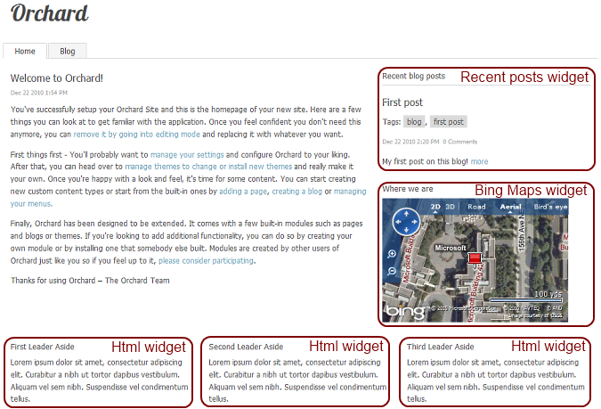
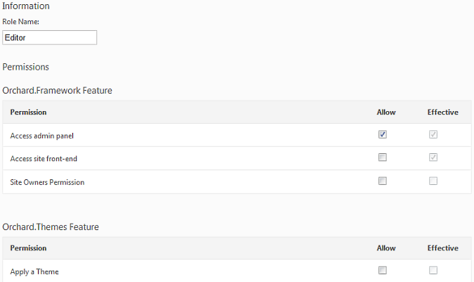

Orchard is a Web CMS, which essentially aims at helping you build web sites from existing pieces. Those pieces come in a few different sizes and shapes that need to be well understood if you're going to be productive with them. This article will go through those pieces and explain their names and behavior.
Orchard是一个Web CMS，主要旨在帮助您从现有的部分构建网站。这些作品有几种不同的尺寸和形状，如果你要用它们来提高效率，需要很好地理解它们。本文将介绍这些内容并解释其名称和行为。
General CMS definitions
一般CMS定义
Content
内容
The "C" in CMS means "content" so it would be fair to say that content is anything that the CMS manages. More precisely, content is everything in the site that has any information in it. For example, a blog post, a comment, a product and even the navigation menu or your company's logo are identifiable, individual pieces of content. If you were thinking at this moment that content is pretty much everything on the site you'd be right. If you were thinking that is pretty vague, you'd be right as well. We will get a lot more specific and distinguish between different kinds of content in following sections.
CMS中的“C”表示“内容”，因此可以公平地说内容是CMS管理的任何内容。更准确地说，内容是网站中包含任何信息的所有内容。例如，博客文章，评论，产品甚至导航菜单或公司徽标都是可识别的，单独的内容。如果您现在正在考虑内容几乎是网站上的所有内容，那么您就是对的。如果你认为这很模糊，你也是对的。我们将更加具体，并在以下部分中区分不同类型的内容。
Admin panel, Dashboard or back-end
管理面板，仪表板或后端
The admin panel (sometimes also called dashboard or back-end) is where you manage your site and its content. It is restricted to users who have the "Access admin panel" permission. This is the "M" in CMS.
管理面板（有时也称为仪表板或后端）是您管理站点及其内容的地方。它仅限于具有“Access admin panel”权限的用户。这是CMS中的“M”。

CMS
CMS
The "S" in CMS is for "System", which is not as vague and meaningless as it seems. It's important that a CMS manages content in a systematic way: this means that all content is managed homogeneously, which enables mutuality of resources.
CMS中的“S”用于“系统”，它看起来并不像模糊和毫无意义。 CMS必须以系统的方式管理内容：这意味着所有内容都是均匀管理的，这样可以实现资源的相互关联。
For example, you can manage blog posts, pages and products using common tools, and all of those can get comments, ratings or tagging from common modules. This gives you a more consistent experience and facilitates the creation of new types of content.
例如，您可以使用常用工具管理博客帖子，页面和产品，所有这些都可以从常用模块获得评论，评级或标记。这为您提供了更一致的体验，并有助于创建新类型的内容。
Front-end
前端
The front-end is the part of the site that is accessible to regular and anonymous users. In other words, it's the public-facing part of your site: everything but the admin UI.
前端是常规和匿名用户可访问的站点的一部分。换句话说，它是您网站面向公众的一部分：除了管理员用户界面之外的一切。

Setup
建立
Setup is the process you must follow in order to get your web site to working condition (and no more than that, you still have work to do after it's done, such as creating content).
设置是您必须遵循的过程，以使您的网站处于工作状态（并且不会超过这个，您仍然需要完成工作，例如创建内容）。

Orchard concepts
果园的概念
Content Item
内容项目
A content item is a single piece of content, often associated with a single URL (address) on the site. Examples of content items are pages, blog posts or products.
内容项是单个内容，通常与站点上的单个URL（地址）相关联。内容项的示例是页面，博客帖子或产品。
Content type
内容类型
Content items are instances of content types. Said differently, content types are classes of content items. We said in the previous section that examples of content items are pages, blog posts, and products. Those three examples also describe three content types: page, blog post and product. In other words what we call a blog post is just an item of type blog post.
内容项是内容类型的实例。换句话说，内容类型是内容项的类。我们在上一节中说过，内容项的示例是_pages_，blog posts_和_products。这三个示例还描述了三种内容类型：page，blog post_和_product。换句话说，我们所谓的博客文章只是博客文章的一个项目。
Content Part
内容部分
In Orchard, content types are built from smaller parts, that are conveniently called content parts. Content parts are atoms of content that are enough to build a specific coherent behavior and that can be reused across content types.
在Orchard中，内容类型是由较小的部分构建的，这些部分通常称为内容部分。内容部分是内容的原子，足以构建特定的连贯行为，并且可以跨内容类型重用。

For example, comments, tags or ratings are content parts because they define a specific behavior and can be reused by any content type. There is nothing in comments that is specific to a given content type such as blog posts. Comments can be equally useful on blog posts as they would be on pages or products.
例如，评论，标签或评级是内容部分，因为它们定义了特定的行为，并且可以被任何内容类型重用。评论中没有任何特定于给定内容类型的内容，例如博客帖子。评论在博客帖子中同样有用，就像它们在页面或产品上一样。
There can be only one of each part on any given content type.
在任何给定的内容类型上，每个部分只能有一个。
Content Field
内容领域
Content fields are pieces of information that can be added to a content type. Content fields have a name and a type and are specific to a content type. There can be several of each field type on any given content type.
内容字段是可以添加到内容类型的信息。内容字段具有名称和类型，并且特定于内容类型。在任何给定的内容类型上，每种字段类型可以有几种。
For example, a Product content type can have a text field representing its SKU, a numeric field representing its price, and another numeric field representing its weight. Each of these fields probably only makes sense on a product.
例如，产品内容类型可以具有表示其SKU的文本字段，表示其价格的数字字段以及表示其权重的另一个数字字段。这些领域中的每一个可能仅对产品有意义。
Note
！注意
It would be possible to create a product part with three properties that would be roughly equivalent to this set of fields.
This would have the advantage of making it possible to transform any content type into a product.
Each approach is a valid choice and Orchard allows for both.
Module
模
The various custom extensions that can be built for Orchard are typically built as modules. A module is a set of extensions for Orchard that are grouped under a single sub-folder of the Modules directory that can be found under the Orchard web site.
可以为Orchard构建的各种自定义扩展通常构建为_modules_。模块是Orchard的一组扩展，它们分组在“Modules”目录的单个子文件夹下，可以在Orchard网站下找到。
Optional modules for Orchard can be found in the Orchard Gallery (see the menu entry on top of this page).
可以在Orchard Gallery中找到Orchard的可选模块（请参阅本页顶部的菜单条目）。

Feature
特征
A module can contain one or more features, which is a logical grouping of functionality that can be enabled or disabled individually. For example, a custom authentication module could have separate features for OpenID, FaceBook, LiveID, Twitter or Google authentication that can each be turned on or off.
模块可以包含一个或多个_features_，它是可以单独启用或禁用的功能的逻辑分组。例如，自定义身份验证模块可以具有OpenID，FaceBook，LiveID，Twitter或Google身份验证的单独功能，每个功能都可以打开或关闭。
Features can depend on each other, whether they are in the same module or not.
功能可以相互依赖，无论它们是否在同一模块中。

Manifest
表现
A manifest is a small text file that describes a module or a theme to the system.
清单是一个小文本文件，用于描述系统的模块或主题。
Here is an example of a manifest:
以下是清单的示例：
Name: Comments
AntiForgery: enabled
Author: The Orchard Team
Website: http://orchardproject.net
Version: 1.10.2
OrchardVersion: 1.9
Description: The comments system implemented by this module can be applied to arbitrary Orchard content types, such as blogs and pages. It includes comment validation and spam protection through the Akismet service.
Features:
Orchard.Comments:
Name: Comments
Description: Standard content item comments.
Dependencies: Settings, Orchard.Tokens
Category: Social
Orchard.Comments.Workflows:
Name: Comments Workflows Activities
Description: Provides workflow activities for comments management.
Category: Workflows
Dependencies: Orchard.Workflows
UI composition
UI组成
Orchard manages content that is composed from parts. It needs a mechanism that orchestrates the display while taking into account the composite nature of the content. This is why we talk about UI composition, as elementary bits and pieces of content need to be composed into a harmonious and consistent whole. Several concepts contribute to this UI composition.
Orchard管理由_parts_组成的内容。它需要一种机制来协调显示，同时考虑内容的复合性质。这就是为什么我们谈论UI组合，因为基本的部分和内容需要组成一个和谐和一致的整体。有几个概念有助于这种UI组合。
Theme
主题
When designing a web site, it is important to be able to modify the visual look of every single aspect of the site. Orchard provides a clean separation between the content management and the visual rendering of the content.
在设计网站时，能够修改网站每个方面的视觉外观非常重要。 Orchard在内容管理和内容的可视化呈现之间提供了清晰的分离。
A theme is a packaged look and feel for an Orchard site. It can consist of any combination of style sheets, images, layouts, templates and even custom code. It is even possible to create a theme that inherits from another, which is very useful if you are trying to make only small modifications to an existing theme.
主题是Orchard站点的打包外观。它可以包含样式表，图像，布局，模板甚至自定义代码的任意组合。甚至可以创建一个从另一个继承的主题，如果您只想对现有主题进行少量修改，这非常有用。

Layout
布局
A layout is a file in a theme that defines the general organization of the pages of the site that use it. A layout typically defines a set of zones where contents or widgets can be inserted.
layout_是主题中的文件，用于定义使用它的站点的页面的一般组织。布局通常定义一组_zones，其中可以插入内容或小部件。

Template
模板
Each content part, each field and each widget will need to be graphically represented in the front-end, transforming the data that it represents into a form that can be read by the users of the site. A template is the recipe that formats that data and transforms it into HTML for the browser to display. You can think of a template as plain HTML with well-defined "holes" where data gets inserted.
每个内容部分，每个字段和每个窗口小部件都需要在前端以图形方式表示，将其表示的数据转换为可由站点用户读取的表单。 _template_是格式化该数据并将其转换为HTML以供浏览器显示的配方。您可以将模板视为纯HTML，其中插入了明确定义的“漏洞”。
Here is an example of a template that displays the title from the Route part:
以下是一个显示“Route”部分标题的模板示例：
<h1>@Model.Title</h1>
Shape
形状
Before displaying something using a template, that something gets transformed into a shape, which is a very malleable object that contains all the information required in order to display it. Before getting rendered by templates, everything gets mapped into a tree of shapes that is a sort of abstract representation of the contents of the final page. The advantage of such trees of shapes is that any module can modify existing shapes or create new ones.
在使用模板显示内容之前，将某些内容转换为_shape_，这是一个非常具有可塑性的对象，其中包含显示它所需的所有信息。在通过模板呈现之前，所有内容都被映射到_tree的形状_，这是对最终页面内容的一种抽象表示。这种形状树的优点是任何模块都可以修改现有形状或创建新形状。
The layout, zones, widgets and content parts all get represented as shapes as part of the rendering process.
布局，区域，窗口小部件和内容部件都被表示为形状，作为渲染过程的一部分。
One could imagine for example a Gravatar module that would add avatar icon shapes to the comment shapes that were created by the comment module. In the same way, the layers from the widget module are adding widget shapes to the zone shapes of the layout shape.
可以想象例如Gravatar模块，其将化身图标形状添加到由评论模块创建的评论形状。同样，widget模块中的图层将窗体小部件形状添加到布局形状的区域形状中。
Placement
放置
When rendering the collections of parts and fields -or any other shapes- that compose a page or content item, Orchard needs to know in what order to do so. Placement.info files are XML files with rules that can be used to determine what shapes go into what zones and in what order. This enables not only the rendering of each shape to be customized, but also the order in which they get rendered.
在渲染零件和字段的集合 - 或构成页面或内容项的任何其他形状时，Orchard需要知道以何种顺序执行此操作。 Placement.info文件是带有规则的XML文件，可用于确定哪些形状进入哪些区域以及按什么顺序排列。这不仅可以自定义每个形状的渲染，还可以实现渲染的顺序。
Here is an example of a placement file:
以下是展示位置文件的示例：
<Placement>
<Place Parts_Map="Content:10"/>
<Place Parts_Map_Edit="Content:7.5"/>
</Placement>
Zone
区
Zones are specific parts of a layout that can be customized by inserting widgets. In some themes, zones are collapsible, which means that they disappear if they contain no active widget.
区域是布局的特定部分，可以通过插入窗口小部件进行自定义。在某些主题中，区域是可折叠的，这意味着如果它们不包含活动窗口小部件，它们就会消失。
Widget
窗口小部件
A widget is a small fragment of UI that can be added to some or all pages of the site. Examples of widgets are tag clouds, maps, archives, a search form, or recent blog posts.
_widget_是UI的一小部分，可以添加到网站的部分或全部页面。小部件的示例是标签云，地图，档案，搜索表单或最近的博客帖子。

Layer
层
A layer is a group of widgets (with their specific configuration, which includes their positioning -zone name and ordering-) that is activated by a specific rule.
_layer_是由特定规则激活的一组小部件（具有其特定配置，包括其定位 - 区域名称和排序）。
For example, the TheHomePage layer is activated by a rule that specifically selects the home page. The Default layer is always active no matter what page is displayed. The Authenticated layer is only active when a user has identified themselves.
例如，TheHomePage层由专门选择主页的规则激活。无论显示什么页面，“默认”图层始终处于活动状态。 “Authenticated”图层仅在用户识别出自己时才有效。
When more than one layer is active on any given page, all the widgets from all those layers get displayed at the same time. Orchard orders them based on their position string.
当任何给定页面上有多个图层处于活动状态时，所有这些图层中的所有窗口小部件都会同时显示。 Orchard根据他们的位置字符串对它们进行排序。
Security
安全
Users and roles
用户和角色
In Orchard, roles can be assigned to users. Roles can be seen as stereotypes of users. Permissions can then be assigned to roles in order to define who can do what on the site (more on this in the next section). Any user can have one or several roles.
在Orchard中，可以将_roles_分配给用户。角色可以被视为用户的刻板印象。然后可以将权限分配给角色，以便定义谁可以在站点上执行哪些操作（下一节将详细介绍）。任何用户都可以拥有一个或多个角色。
Site owners can create their own roles but Orchard comes with built-in roles that should cover most sites' requirements:
网站所有者可以创建自己的角色，但Orchard带有内置角色，应该涵盖大多数网站的要求：
-
Administrator: have full control over the site's settings and contents.
-
管理员：完全控制网站的设置和内容。 *
-
Editor: does not create content, but edits and publishes content created by authors.
-
编辑：不创建内容，而是编辑和发布作者创建的内容。 *
-
Moderator: validates user-created contents such as comments.
-
主持人：验证用户创建的内容，例如评论。 *
-
Author: writes and publishes his own content.
-
作者：撰写并发布自己的内容。 *
-
Contributor: writes content but does not necessarily have the rights to publish it.
-
贡献者：撰写内容但不一定有权发布内容。 *
-
Anonymous: an unknown user, someone who hasn't logged in.
-
匿名：未知用户，未登录的用户。 *
-
Authenticated: any user who has logged in.
-
已验证：已登录的任何用户。 *
Neither Anonymous nor Authenticated can be assigned to a user manually. Rather, they are determined dynamically at runtime.
Anonymous和Authenticated都不能手动分配给用户。相反，它们是在运行时动态确定的。
Privileges and Permissions
权限和权限
All users don't have the same rights and privileges in Orchard: the site owner can choose who can create content, who can write or validate comments, etc. Rights and privileges are represented as permissions. In Orchard, permissions are granted to roles, but are not explicitly denied. In other words if a user belongs to any role that has a given permission, he has that permission. To revoke a permission, you need to either remove a user from the role the permission has been granted to or you need to remove that permission for the whole role.
所有用户在Orchard中没有相同的权限和特权：网站所有者可以选择谁可以创建内容，谁可以编写或验证评论等。权限和特权表示为_permissions_。在Orchard中，权限被授予角色，但未明确拒绝。换句话说，如果用户属于具有给定权限的任何角色，则他具有该权限。要撤消权限，您需要从已授予权限的角色中删除用户，或者需要删除整个角色的权限。
Some permissions are "effectively granted". This means that they have not been explicitly granted, but that they have been implied by another permission. For example, if you grant the Site Owners Permission, you are implicitly granting all the other permissions.
某些权限被“有效授予”。这意味着它们没有被明确授予，但是它们已被另一个许可暗示。例如，如果您授予_Site Owners Permission_，则会隐式授予所有其他权限。

Permissions, as well as their default settings for the built-in roles, are defined by modules. This means that if you build your own module, you can define specific permissions to accompany it.
权限以及内置角色的默认设置由_modules_定义。这意味着如果您构建自己的模块，则可以定义其附带的特定权限。
Site owner
网站所有者
The site owner, sometimes also called "super user", is a special user that is defined at setup time and that has all the rights on the site. It can be changed from the Settings admin screen if you have the permission to do so.
站点所有者（有时也称为“超级用户”）是一个特殊用户，在设置时定义并拥有站点上的所有权限。如果您有权这样做，可以从_Settings_ admin屏幕更改它。
There is a permission called Site Owners Permission that grants the same right and that is granted by default to only members of the Administrator role. We advise never to grant that permission to any other role.
有一个名为_Site Owners Permission_的权限，它授予相同的权限，并且默认情况下仅授予_Administrator_角色的成员。我们建议永远不要将该许可授予任何其他角色。
Development
发展
In this section we will describe concepts that are only required for module developers.
在本节中，我们将描述模块开发人员只需要的概念。
ASP.NET MVC
ASP.NET MVC
ASP.NET MVC is the Web framework that Orchard is built on.
ASP.NET MVC是Orchard构建的Web框架。
Handler
处理器
A handler is similar to an MVC filter in that it contains code that will execute for specific events of the request life-cycle. They are typically used to set-up data repositories or to do additional operations when something gets loaded.
handler_类似于MVC _filter，因为它包含将为请求生命周期的特定事件执行的代码。它们通常用于设置数据存储库或在加载某些内容时执行其他操作。
Driver
司机
Drivers are similar to MVC controllers, but they act at the level of a content part instead of at the level of the full request. They typically prepare shapes for rendering and handle post-backs from admin editors.
Drivers_类似于MVC _controllers，但它们在内容部分的级别而不是在完整请求的级别上起作用。它们通常为管理编辑器准备用于渲染和处理回发的形状。
Record
记录
A record is a class that models the database representation of a content part. They are POCOs where each property must be virtual.
_record_是一个为内容部分的数据库表示建模的类。它们是POCO，其中每个属性必须是虚拟的。
Model
模型
The part of the model for a content part is played by the part class itself. Some parts also define view models, in the form of strongly-typed classes or of more flexible dynamic shapes.
内容部分的_model_部分由部分类本身播放。某些部分还以强类型类或更灵活的动态形状的形式定义_view models_。
Migration
移民
A migration is a description of the operations to execute when first installing a feature or when upgrading it from one version to the next. This enables smooth upgrades of individual features without data loss. Orchard includes a data migration framework.
_migration_是首次安装功能或将其从一个版本升级到下一个版本时要执行的操作的说明。这样可以在不丢失数据的情况下顺利升级各个功能。 Orchard包含数据迁移框架。
Injection
注射
Inversion of Control, or injection, is widely used in Orchard. When any piece of code requires a dependency, it will typically demand the injection of one or several instances of a specific interface. The framework will take care of selecting, instantiating and injecting the right implementations at runtime.
控制反转或_injection_在Orchard中被广泛使用。当任何代码片段需要依赖关系时，它通常会要求注入特定接口的一个或多个实例。该框架将负责在运行时选择，实例化和注入正确的实现。
Change History
改变历史
-
Updates for Orchard 1.8
-
Orchard 1.8的更新 *
- 9-6-14: Updated all screen shots for setup, dashboard, content parts and modules/features.